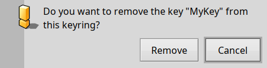
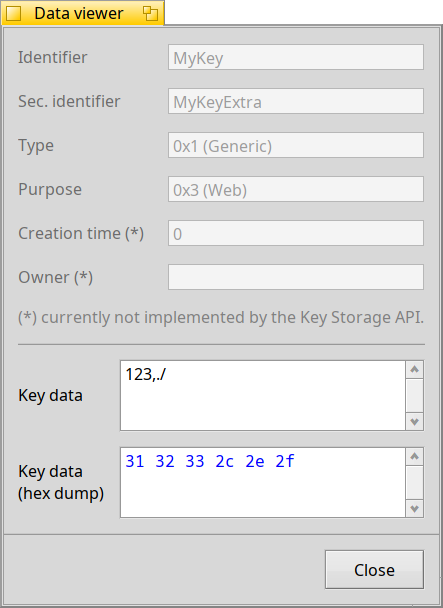
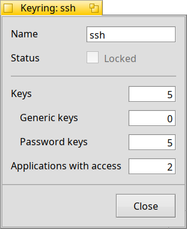

This application is intended to be a frontend for the keystore_server, to perform a more user friendly operation of keys and keyrings stored there.
In the case where the keystore_server is not running, you can make the server to restart by selecting the menu Keys > Restart keystore server. This operation is performed immediately. The graphic interface will populate itself automatically with the database information.
If for any reason you need to stop the keystore_server, in addition of being able to do it from the Process Controller you can also do it from here with Keys > Stop server. This operation is performed immediately. The graphic interface will disable itself and no keystore-related operations can be performed until the server is restarted.
Keystore management includes options to create new keyrings and delete existing keyrings.
To create a new keyring in the system keystore, go to the menu Keystore > Create keyring… (you can also quickly do this by clicking the + button at the bottom of the keyring list view). This will open a dialog box:
The dialog box has only the option to write the name of the keyring to be created and two buttons to confirm or to cancel the creation. To create a keyring, write the desired name and then click Save. If you changed your mind, just click Cancel, or if you have already created the keyring, you can remove it (see below).
A keyring can be locked, so it will ask for user consent before open it again. This can be performed by selecting a keyring in the keyrings list view, and then going to Keyring > Keyring lockdown > Lock keyring.
In order to have the lockdown more effective, the user can activate an unlock key that requires the user to disable the lockdown with a password. This can be done by going to Keyring > Keyring lockdown > Set unlock key…. A dialog box slightly resembling the Add new key from below will appear: to add an unlock key type the password and press Save, or Cancel to abort the operation without changes.
The unlock key can be removed with the menu Keyring > Keyring lockdown > Remove unlock key….
To delete an existing keyring in the system keystore, first select the target keyring in the keyring list view and then go to the menu Keystore > Delete keyring… (you can also quickly do this by clicking the - button at the bottom of the keyring list view after selecting a keyring). The interface will ask you to confirm the operation or to cancel it. If you proceed with the removal, the keyring will be permanently deleted as well as the keys associated with it, and this is without any chance of recovery, so be very careful of what you delete.
To know more about the statistics of the keystore, go to the menu Keystore > Keystore statistics…. This option currently offers the number of keyrings inside the keystore and nothing else.
Here you can operate with options related to a specific keyring. To select a keyring, in the list view at the left side, choose the entry with the target keyring's name, and then perform the desired operation.
The right side panel has a tabbed view, with the first tab containing the list of keys in the keyring, and the second tab the list of applications that were allowed to access this keyring.
The keys view enumerates all the keys (of any type) contained by this keyring.
To create a key, you can either go to the menu Keyring > Create key, and in the submenu select the type of key: Generic key or Password key (you can also do this by clicking the button of Add key in the sidebar of the Keys view).
The Add new key dialog box will appear. There, you can select the type of key (generic or password), the identifier, an optional secondary identifier, the key data (i.e. the password itself) and the purpose (generic, keyring, web, network or volume). For the meaning of any of these concepts, please read the Haiku API documentation. To create a key, it has to have an identifier, a key data (i.e. a password), a type and a purpose. Once the required fields are filled, click Save to create the key, or Cancel to abort the operation.
It is possible for a selected key entry to be exported to a file to afterwards import it for any reason. To export a key, select an entry and click on the Export key sidebar button. It will ask for a file name and a location to where the file will be written to.
If for any reason your key or the keyring containing your key was deleted, if you exported a copy of it you can import it back to the database. Firstly, select the target keyring in the keyring list view, then go to the menu Keyring > Import key…. An open dialog will appear, where you choose the file containing the key and press Import key to import it.
You can also import in bulk a number of exported keys by dragging and dropping the files onto the keyring list view with the target keyring selected. There, a dialog will appear to confirm what keys are available for importing and you can choose which ones you want.
To delete a key, select the target key and click the button of Remove key in the sidebar of the Keys view. It will ask for confirmation once. To proceed with the removal choose Remove, otherwise choose Cancel.
To read all the data associated with a key, either double click the key's entry or select it and press the View key data button. It will open the Data viewer dialog box, and displays the key's identifier, secondary identifier (if it was set), type, purpose, creation time (currently not supported by the API), owner (currently not supported by the API), and the key secret data.
You can quickly copy the key's secret data if you select the target key and click the sidebar button Copy key secret.

With each keyring, alongside the list of keys there is a list of applications that were granted access to the keyring. This is the second tab of the right view.
To revoke an application's access, select the entry in the list view and click the button Remove application.
To copy the target application's signature, select it and click the button Copy signature.
You can double click the target application list item to open the Tracker's information dialog box about the application's binary.
The option Keyring > Keyring statistics… shows the statistics of the currently selected keyring. It currently offers the status of the keyring (whether it is under lockdown or not), the number of keys (and how many of each type), and the number of applications with access.
